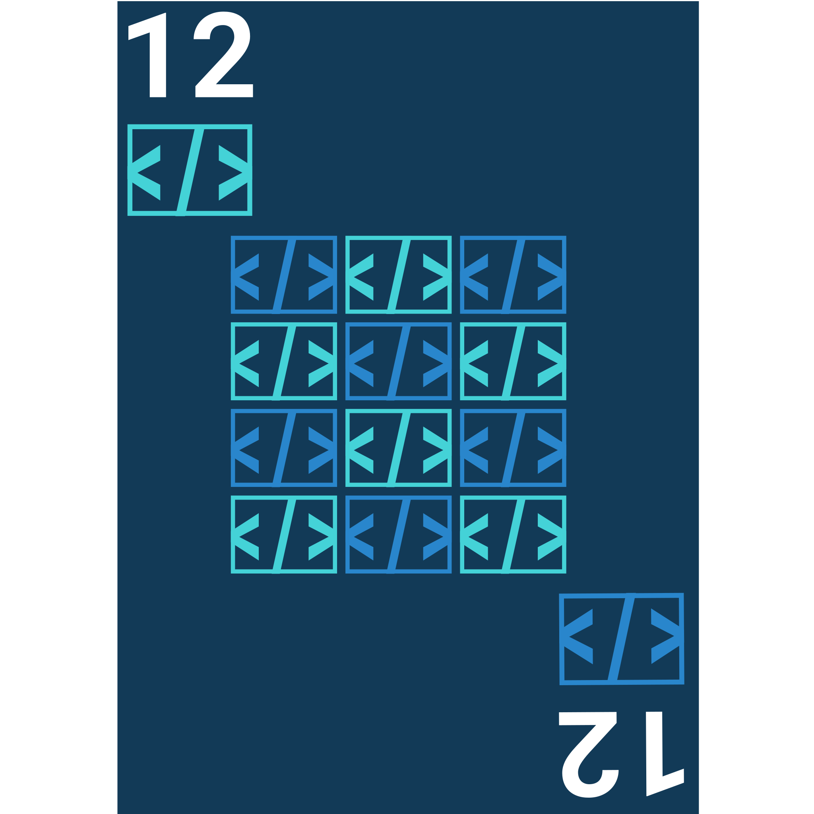

NOTE: You must be on a computer to participate in Mesure73L's Twelve of Code coding challenge. Go to https://mesure.x10.mx/twelve-of-code on your computer to start.
Welcome to Twelve of Code, Mesure73L's yearly coding challenge. You will have 3 challenges a month that you can complete whenever you want, after the release date. Challenges release on the first, 10th, and 20th of every month.
Features
- Custom-built challenge navigator
- Simple way to transfer challenge data between devices
- 3 challenges a month, 12 months a year, 36 challenges a year
- An awesome, dedicated development team
- A way to make your own, custom challenges
- Custom resource packs to change how the website looks
- Many more features!
Become a Contributor
If you want to help out, it's simple! You can start by creating an issue on our GitHub repository. Then, you can help us out with it by developing the feature and creating a pull request to merge it. After a decent amount of accepted pull requests, you may become a collaborator if you want to, where you can make any features you want!
Credits
Twelve of Code was made by Mesure73L, with some help from BeepBot99.
